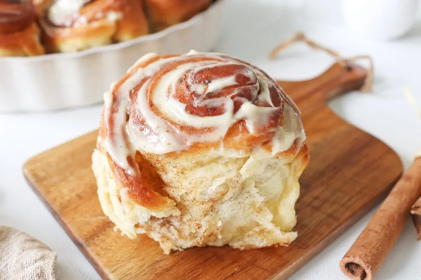

Cinnamon Rolls
Home

The cinnamon roll
is originally from central and Northern Europe, particularly Germany and Sweden
It is believed that Swedish immigrants brought them to the United States in the late 19th century.
These pastries quickly became popular with the increase of refined sugar and yeast
As they became more loved a company name Cinnabon
opened in 1985 and grew the cinnamon roll to its current main stream state.
List of Ingredients
- 2/3 cup of brown sugar
- two teaspoons ground cinnamon
- nine table spoons butter, softened, divided
- 1/4 teaspoon salt, divided
- One(12 count) Hawaiian rolls
- Three ounces of cream cheese, softened
- One teaspoon vanilla extract
- 1 cup of confectioners sugar
Steps for baking
- Preheat the oven to 350 degrees F (180 degrees C)
- Lightly grease a 9x13-inch baking dish. Slice rolls in half horizontally, keeping tops and bottoms connected.
- Stir together brown sugar, cinnamon, 8 tablespoons butter, and 1/8 teaspoon salt in a small bowl until well combined and set aside.
- Spread bottom half of buns with 3/4 of butter mixture and place top halves on top.
- Place rolls in the prepared baking dish; spread remaining butter mixture on top.
- Bake in the preheated oven for 20 minutes. Let stand for 5 minutes before icing.
- Meanwhile, beat remaining 1 tablespoon butter with cream cheese, remaining salt, vanilla, and confectioner sugar with an electric mixer until smooth.
- Spread icing over warm rolls.
- Enjoy!